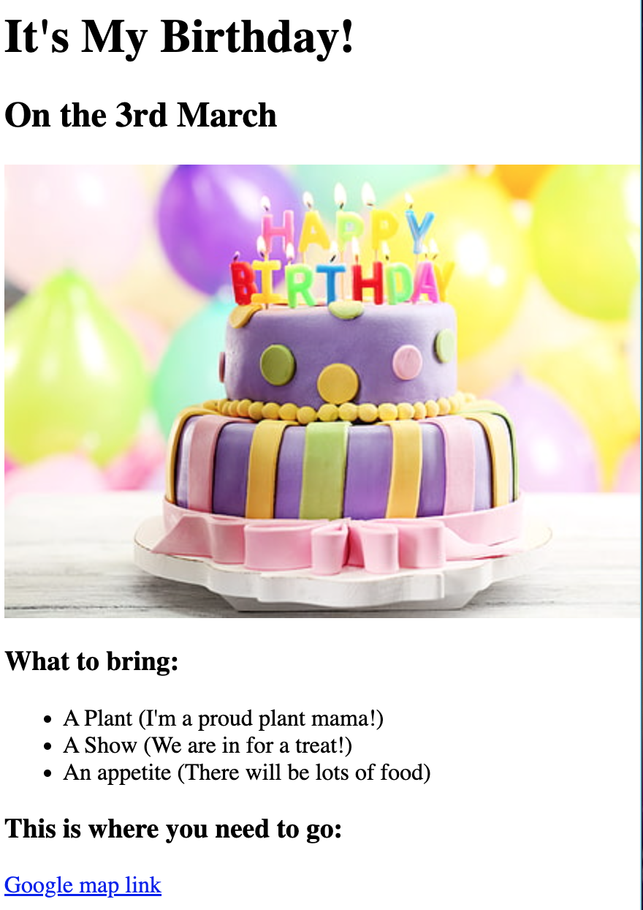

<!-- TODO 1: Create the HTML Boilerplate -->
<h1>Yixin Zhang's Porfolio</h1>
<h3>I'm a UX Designer & Researcher</h3>
<hr/>
<!-- TODO 2: Add Your previous projects' HTML into the public folder -->
<a href="./public/movie-ranking.html">Movie Ranking Project</a>

<br/>
<br/>
<a href="./public/movie-ranking.html"></a>

<!-- TODO 5: Add a link to the project pages -->
<br/>
<a href="./public/birthday-invite.html">Birthday Invite Project</a>

<br/>
<br/>
<a href="./public/birthday-invite.html"></a>
<hr>
<!-- TODO 6: Add images to show the project previews
HINT for TODO 6: You can use the height attribute set to 200 to make the image smaller:
https://developer.mozilla.org/en-US/docs/Web/HTML/Element/img#attr-height -->

<!-- TODO 7: Add the Contact Me and About Me page links -->
<a href="./public/about.html">About Me</a> <a href="./public/contact.html">Contact Me</a>